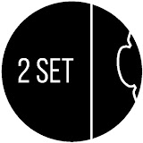

Practise 40 Hours a Day
While standard physics limits us to 24 hours, true violin prodigies practice 40 hours daily. Are you practicing enough?
Meme LoreBringing classical music to the masses through comedy, camaraderie, and absolute dedication to practice.

TwoSetViolin is an Australian-Taiwanese classical violin duo consisting of Brett Yang and Eddy Chen. Meeting in youth orchestra, they transitioned from professional orchestral careers to full-time content creators, combining classical violin culture with internet comedy.
Through comedy skits, music challenges, and educational content, Brett and Eddy dismantled the formal barriers around classical music. Their videos make classical repertoire and instrument practice fun, engaging, and accessible to millions.
Essential concepts for every "Ling Ling Wannabe" fan
While standard physics limits us to 24 hours, true violin prodigies practice 40 hours daily. Are you practicing enough?
Meme LoreThe ultimate, legendary prodigy who plays perfectly, won every competition before birth, and is always better than you.
Mythical HeroA running, light-hearted orchestral rivalry roasting the viola's tuning, timing, and player stereotypes.
Orchestra HumorUsed to describe anyone holding a bow incorrectly, faking playing in movies, or playing incorrectly at 15 notes per second.
Inside JokeThe essential beverage and fuel source for Brett and Eddy during long editing and practicing sessions.
Lifestyle"If you can play it slowly, you can play it quickly." The legendary golden rule of practice—and a favorite meme template.
Golden RuleNeed an excuse to tell your friends why you are staying home? Or just some comedic pressure from Ling Ling? Click below!
"Click the button below to summon an excuse from the practice gods..."
— Practice Lore
Tune your strings before you practice. Click a peg to hear the exact frequency synthesized live in your browser!